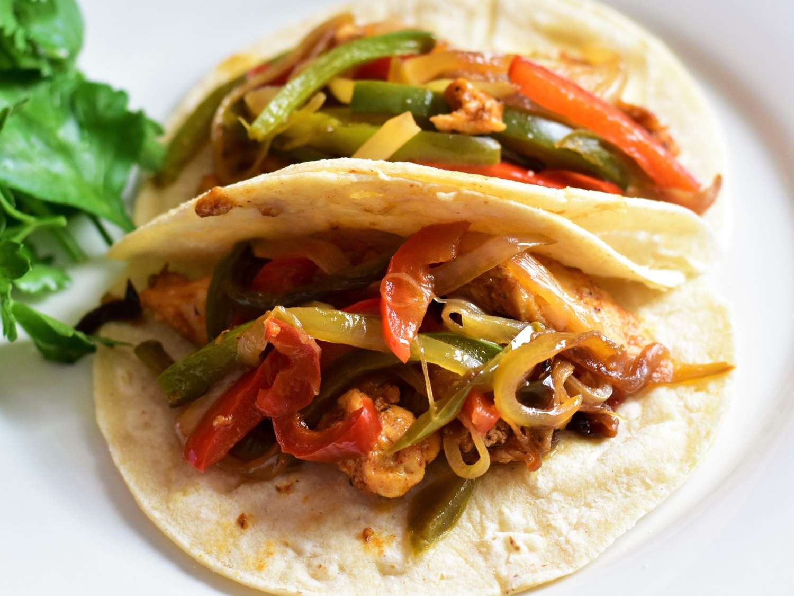

Chicken Fajita Recipe

Description
This dish features tender, marinated chicken infused with smoky paprika, coriander, and lime,
paired with crisp red onions, peppers, and a touch of heat from optional red chili. Served
with warm tortillas, fresh salsa, and mixed salad, it offers a vibrant and customizable meal
that's both flavorful and satisfying.
Perfect for a quick dinner or casual gathering, this meal balances smoky, spicy, and
fresh elements in every bite, making it a deliciously simple option for any occasion.
Ingredients
- 2 chicken breasts, finely sliced
- 1 red onion, finely sliced
- 1 red pepper, sliced
- 1 red chilli, finely sliced (optional)
- For the marinade
- 1 tbsp smoked paprika
- 1 tbsp ground coriander
- A pinch of ground cumin
- 2 garlic cloves, crushed
- 4 tbsp olive oil
- Juice of 1 lime
- 4-5 drops Tabasco
- To serve
- 8 tortillas
- Mixed salad
- 230g fresh salsa
Method
- Heat oven to 200C/180C fan/gas 6 and wrap 8 medium tortillas in foil.
- Mix 1 heaped tbsp smoked paprika, 1 tbsp ground coriander, a pinch of ground cumin, 2 crushed garlic cloves, 4 tbsp olive oil, the juice of 1 lime and 4-5 drops Tabasco together in a bowl with a big pinch each of salt and pepper.
- Stir 2 finely sliced chicken breasts, 1 finely sliced red onion, 1 sliced red pepper, and 1 finely sliced red chilli, if using, into the marinade.
- Heat a griddle pan until smoking hot and add the chicken and marinade to the pan.
- Keep everything moving over a high heat for about 5 minutes using tongs until you get a nice charred effect. If your griddle pan is small, you may need to do this in two batches.
- To check the chicken is cooked, find the thickest part and tear in half – if any part is still raw, cook until done.
- Put the tortillas in the oven to heat up and serve with the cooked chicken, a bag of mixed salad, and one 230g tub of fresh salsa.